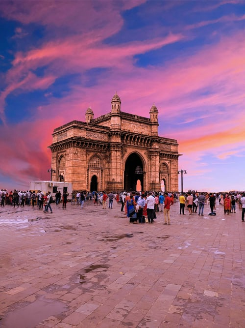
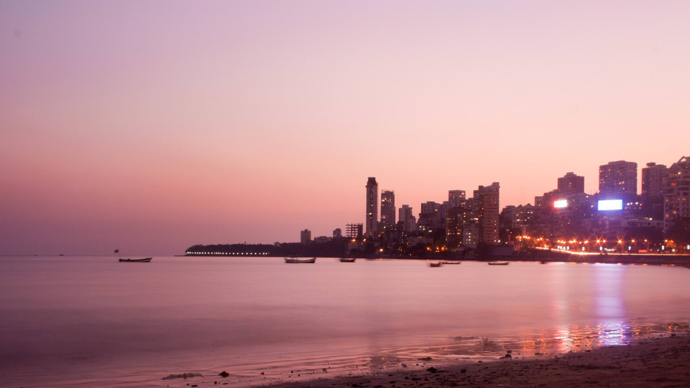
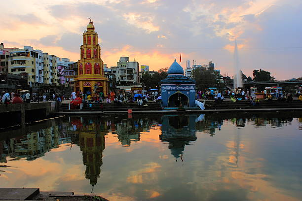
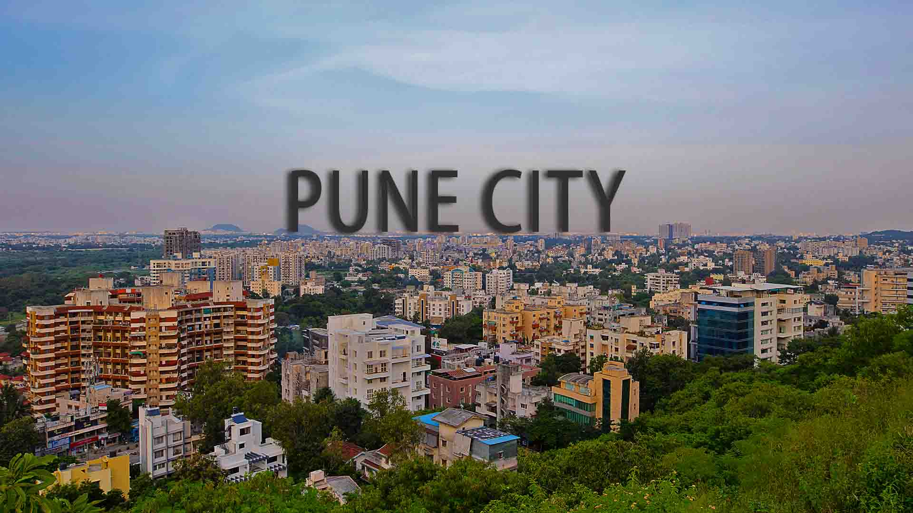
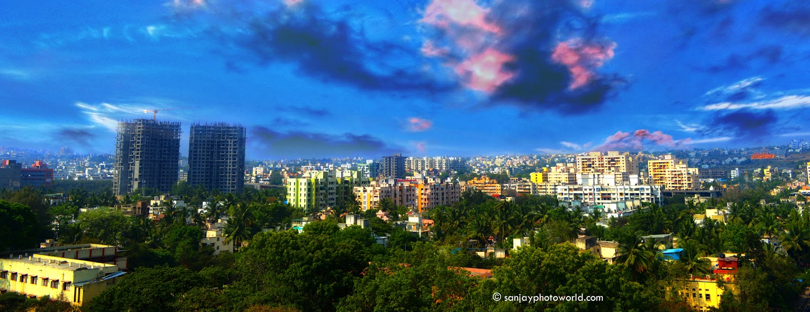
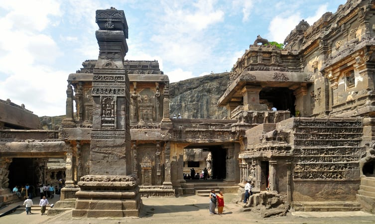

LETS GO AROUND MAHARASHTRA

Information Of Maharashtra
Maharashtra is a state in the western and central peninsular region of India occupying a substantial portion
ofthe Deccan Plateau. The centre of India is in this state. Maharashtra is the second-most populous state in
India
as well as the third-most populous country subdivision in the world. It was formed on 1 May 1960 by splitting
the bilingual
Bombay State, which had existed since 1956, into majority Marathi-speaking Maharashtra and Gujarati-speaking
Gujarat. Thus Maharashtra is a Marathi linguistic state. The state is divided into 6 divisions and 36
districts,
with the state capital being Mumbai, also the most populous urban area in India and Nagpur serving as the
winter
capital. The Godavari and the Krishna are the two major rivers in the state. Marathi is the most widely
spoken
language and is also the official language of the state. The forest cover in the state is 16.47% of the
state's
geographical area. Out of total cultivable land in Maharashtra about 60% land is under food grain crops with
Jowar (Sorghum bicolor) being the dominating crop.Maharashtra is the most industrialised state in India and the
state's capital, Mumbai is India's financial and commercial hub. The state has played a significant role in
the country's social and political life and widely considered a leader in terms of agricultural and
industrial
production, trade and transport, and education. Maharashtra is among the most developed Indian states and
continues to be the single largest contributor to the national economy with a share of 15% in the country's
GDP. The economy of Maharashtra is the largest in India, with a gross state domestic product (GSDP) of
₹32.24 trillion (US$450 billion) and GSDP per capita of ₹251,000 (US$3,500).[3] Maharashtra is the
fifteenth-highest ranking among Indian states in human development index.
Population Of Those Cities
| City |
Population in 2017 |
Popolation in 2018 |
Population in 2019 |
| Mumbai |
19,756,000 |
19,980,000 |
20,185,000 |
| Nashik |
1,894,000 |
1,952,000 |
2,009,000 |
| Pune |
6,093,800 |
6,275,748 |
6,451,618 |
| Amravati |
717,621 |
729,444 |
740,529 |
| Aurangabad |
1,434,000 |
1,476,000 |
1,517,000 |
Some Cities In Maharashtra
- Mumbai
- Nashik
- Pune
- Amravati
- Aurangabad
- Mumbai
- Mumbai (formerly called Bombay) is a densely populated city on India’s west coast. A financial center, it's
India's largest city. On the Mumbai Harbour waterfront stands the iconic Gateway of India stone arch, built
by the British Raj in 1924. Offshore, nearby Elephanta Island holds ancient cave temples dedicated to the
Hindu god Shiva. The city's also famous as the heart of the Bollywood film industry.The seven islands that
came to constitute Mumbai were home to communities of fishing colonies of the Koli people. For centuries,
the islands were under the control of successive indigenous empires before being ceded to the Portuguese
Empire and subsequently to the East India Company when in 1661 Charles II of England married Catherine of
Braganza and as part of her dowry Charles received the ports of Tangier and Seven Islands of Bombay. During
the mid-18th century, Bombay was reshaped by the Hornby Vellard project, which undertook reclamation of the
area between the seven islands from the sea. Along with construction of major roads and railways, the
reclamation project, completed in 1845, transformed Bombay into a major seaport on the Arabian Sea. Bombay
in the 19th century was characterised by economic and educational development. During the early 20th century
it became a strong base for the Indian independence movement. Upon India’s independence in 1947 the city was
incorporated into Bombay State. In 1960, following the Samyukta Maharashtra Movement, a new state of
Maharashtra was created with Bombay as the capital.

- Nashik
- Nashik is an ancient holy city in Maharashtra, a state in western India. It’s known for its links to the
“Ramayana” epic poem. On the Godavari River is Panchavati, a temple complex. Nearby, Lord Rama was thought
to have bathed at Ram Kund water tank, today attended by Hindu devotees. Shri Kalaram Sansthan Mandir is an
ancient shrine to Rama, while Rama and Sita are said to have worshipped at Sita Gufaa caves.Nashik is one of
the most important cities of Northern Maharashtra. Nashik, in Maharashtra, is situated at a distance of 200
km from Mumbai (Bombay) as well as Pune. The city has become the center of attraction because of its
beautiful surroundings and cool and pleasant climate. Nashik has a personality of its own due to its
mythological, historical, social and cultural importance. The city, vibrant and active on the industrial,
political, social and cultural fronts, has influenced the lives of many a great personalities. The river
Godavari flows through the city. Temples and ghats on the banks of Godavari have made Nashik one of the
holiest places for Hindus all over the World.

- Pune
- Pune is a sprawling city in the western Indian state of Maharashtra. It was once the base of the Peshwas
(prime ministers) of the Maratha Empire, which lasted from 1674 to 1818. It's known for the grand Aga Khan
Palace, built in 1892 and now a memorial to Mahatma Gandhi, whose ashes are preserved in the garden. The
8th-century Pataleshwar Cave Temple is dedicated to the Hindu god Shiva.Pune formerly was known as poona.
The Second largest city after mumbai in maharashtra state. The population of Pune approximately 66 lacs in
2017. The most famous twin industrial are near or almost joined to pune known as Pimpri chinchwad and
cantonment small towns like khadki and dehuroad almost connected to pune. Pune is at 560 meters above sea
level. This is also a headquarter place for the King Peshwas in 18th century. Pune is also famous and know
for cultural city capital of state maharashtra. This is also wellknown educational hub which have lot of
international training institute. Lot of international students come to pune for study to well known
international institute for learning. Pune have lot of colleges who are connected to Europe for student
exchange program. The twin city pimpri and chinchwad have lot of manufacturing and automobiles.

- Amravati
- Amravati is a city in state of Maharashtra, India. It is the second largest city in Vidarbha region of
Maharashtra after Nagpur and is administrative headquarter of the Amravati district.Amravati is far from the
coastline and rests at an elevation of 343 metres above sea level. The city is located almost midway between
the cotton growing regions and thus separates the region into the West known as Purna basin and the East
known as the Wardha basin. The city is also blessed with two beautiful lakes known as the Chhatri Talao and
the Wadali Talao. Amravati is also surrounded by hills to its east called the Pohara and Chirodi Hills and
also has a 60 meters high Maltekdi hill inside its boundaries.Geography Amravati city is situated 340 m
above from the sea level. Pohara & Chirodi hills are in the east of the city. Maltekdi is one of the hills,
which is inside the city. The hight of Maltekdi is around 60 m & the statue of great maratha kind, Shri
Shivaji Maharaj is placed on the top of the hill. There are two lakes in the eastern part of the city,
namely, Chhatri Talao & Wadali Talao. The city is located in the East Maharashtra on the altitude of 20o 56′
north & 77o 47’ east. It is the main centre of west Vidarbha. It is on the Mumbai-Calcutta high way.

- Aurangabad
- Aurangabad is a city in Maharashtra state, in India. It’s known for the 17th-century marble Bibi ka Maqbara
shrine, styled on the Taj Mahal. The nearby Shivaji Maharaj Museum, dedicated to the Maratha king Shivaji,
displays war weapons and a coin collection. North of the city, the Aurangabad Caves comprise ancient,
rock-cut Buddhist shrines. West of the city, battlements surround the medieval Daulatabad Fort.Aurangabad is
an important city in the state of Maharashtra, India. It sees a lot of international tourist traffic due to
world heritage sites, Ajanta & Ellora caves. Aurangabad, a dream destination of Mughal Emperor Aurangzeb,
founded in 1610, is known today, as one of the four important cities in Maharashtra. The city is heading
towards rapid industrial growth, but retains its past glory and charms, heritage and traditions.
Conspicuously seen on the Deccan plateau, it has a rich culture and a plethora of magnificent arts on
display.
